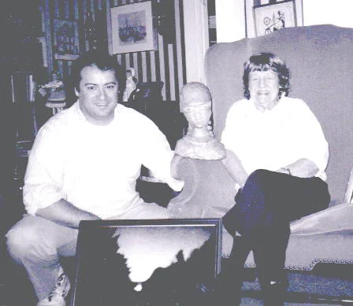

How believable are people who claim to be UFO abductees? An informal assessment based on interviews with Betty Hill, Richard Price, Sr, and attendance at Budd Hopkins’s Intruder Foundation’s Year 2000 UFO Abduction Conference. The author discusses his impressions, concluding that alternate explanations are more believable than the alien abduction hypothesis.
Few subjects in Ufology captivate like abduction claims (no pun intended). That beings from a mysterious realm, perhaps extraterrestrial, perhaps something even more exotic and mysterious, might be visiting our world is fascinating on its own. If, as many claim, they are entering our world to seize humans, paralyze them, tamper with their memories, even probe their rectum and sample their DNA, sometimes leaving mysterious implants in people, or causing strange pregnancies as part of a cosmic experiment, is unavoidably disturbing and attention grabbing. To those who believe, the abductee reports and stories are a sign that our very species is on the cusp of a great change, perhaps utopian, perhaps one where humanity’s right to rule and manage our own planet, even our lives, may be in danger.
Yet even the most mundane interpretation, that the claims can be explained by psychology, offers an extreme example of the flexible way the human species at times interprets or distorts reality. Either way, the abduction claims are worth examining.
Who are these abductees and how believable are they? While I do not claim to be an expert, I have met some well-known and not so well-known UFO abductees. Here I offer my thoughts and opinions on three contacts that took place approximately 20 years ago, arguably the height of interest in UFO abduction claims. First is an interview with Betty Hill, widely known as the first UFO abductee to be taken seriously by ordinary people. The second was Richard Price, Sr, a man who reported not just being abducted by space aliens but also claimed physical proof of this encounter. The third was attendance at a large gathering of ufologists and self-identified abductees in Queens (New York), held by Budd Hopkins’s Intruders Foundation, an organization devoted to researching such claims and networking and sharing its beliefs with people who suspected themselves to be alien abductees.
Betty and Barney Hill are probably the best-known UFO abductees of all time. Reportedly, on , while driving through the mountains of New Hampshire, the couple were taken aboard an alien spacecraft and inspected and interviewed by the extraterrestrials aboard. Betty Hill, who was born on , was 42 at the time. Her husband, Barney Hill, was 39. As the couple had no reason to lie about the alleged encounter and were known members of the community, there was little reason to suspect a hoax. Although Betty Hill did have an interest in both science fiction and UFO reports, and spoke about the alleged encounter soon afterwards, neither of these things discounted her claim. As they were known as relatively normal members of their community, many believed her Curtis Peebles: Watch the Skies, A Chronicle of the Flying Saucer Myth, Washington and London, Smithsonian Institution Press, , pp. 160-166 Susan A. Clancy: Abducted, How People Come to Believe They Were Kidnapped by Aliens, Cambridge (Massachusetts) and London, Harvard University Press, , pp. 94-99.
My personal encounter with Betty Hill occurred in , when I called her up, introduced myself as a journalist, and asked for an interview.I had taken an assignment to write an article on UFO abductions for Hustler, the famed pornographic magazine founded by Larry Flynt. I had originally contacted the publication, having been impressed by the journalistic work Adam Parfrey did there. Due to editorial changes, I’m afraid the editorial staff there was not interested in a serious piece on the topic, edited my submission heavily, and I did not work for them again. More of this story can be read in my book Peter Huston: More Scams from the Great Beyond – How to Make Even More Money Off of Creationism, Evolution, Environmentalism, Fringe Politics, Weird Science, the Occult, and Other Strange Beliefs, Boulder (Colorado), Paladin Press, . Some of Adam Parfrey’s journalistic writing can be found in his books Apocalypse Culture, Cult Rapture, and Apocalypse Culture II. She invited me to come to her house in small town New Hampshire. We met on . Betty Hill was then 79, and it had been over 37 years since the alleged incident that had changed her life and made her famous.
Like almost everyone who had the privilege of meeting Betty Hill, I greatly enjoyed our time together. We spoke for a couple hours and then went out for dinner, getting some of the local fried seafood. As a full transcript of the interview is available online in at least two places Peter Huston: interview with Betty Hill Peter Huston: Transcript of interview with Betty Hill, I’m going to simply summarize some key points here. While doing so makes things concise and easy to understand, it does miss much of the flavor of Betty Hill’s style of speaking and the way she tended to bounce from topic to topic, shifting mid-stream, then bouncing back again, in a rambling but delightful way.
When in the presence of Betty Hill, I felt like I was in the presence of someone of great importance, and I was not alone in that. To me, a non-believer in UFOs as spaceships, Betty Hill was a woman of historic importance, to those who believed she was even more.
My friend Tom Calarco, a published author and Underground Railroad researcher who believes that at least some UFOs are alien spacecraft, met Betty Hill in when he spent a summer investigating UFO sightings in New Hampshire. He has described his feelings dramatically:
Wow, was I ever flabbergasted when I found Betty Hill at my cabin door. To me she was more than a celebrity. She was a living link between humanity and the great unknown. . . . . I couldn't believe it! Betty Hill! Bill, my girlfriend soon led them directly to my cabin. I couldn't believe it. This was actually Betty Hill! She was a friendly, little, gray-haired lady, older than I expected. But she was smiling and appeared friendly enough and she had come all the way here just to see me!Like the transcript of the Betty Hill interview, this is in at least two places on the Tom Calarco’s website, Tom Calarco: Confessions of a Red-Hot UFO Investigator Tom Calarco: Confessions of a Red-Hot UFO Investigator
Although a skeptic, I, too, was thrilled to meet Betty Hill and felt that I was in the presence of someone of historic importance, who was the starting point of a significant belief system.
Speaking with Betty Hill at the time, as reading her book, reveals an odd mixture of countless fanciful statements mixed in with common sense and social concern.

A few highlights from our interview, with the reminder this interview occurred near the end of her life after 37 years of enthusiastic contact from ufologists and UFO fandom:
Inside, Betty soon turned on the slide projector. Most of what we saw looked like photos of planes at night, their lights silhouetted against the sky. There was one of interest, though, of these small balls of light that appeared to be flying around some trees. Trick photography? I couldn't tell. A movie followed. It was shot with a super-8, and in order to catch glimpses of the barely flickering points of colored light she claimed were UFOs, we had to sit with our noses in the screen. Her explanation that the fleeting quality of the images was due to their fantastic speed was difficult to accept. It was as if the film were taken of the night sky with bits of light being picked up from planes passing across in the distance. Though she promised to take me to one of her secret spots some other time, my first doubts about her story emerged. Tom Calarco: Confessions of a Red-Hot UFO Investigator Tom Calarco: Confessions of a Red-Hot UFO Investigator
This was almost 17 years after the alleged abduction, and although Tom Calarco tells me that Betty Hill spoke of her abduction with such emotion that he’s convinced something happened to her, clearly there are aspects of her claims that leave him confused and wondering. It must be stated that a likely explanation for many of Betty Hill’s strange statements was reinforcement of the beliefs by visitors. For better or worse, neither Tom Calarco or I confronted or challenged Betty Hill during her stories.
if repressed memories of rape are invalid in New Hampshire, the same thinking applies to rape on board a UFO. And it probably applies to all ‘repressed memories’ of missing time.Betty Hill: A Common Sense Approach to UFOs, Greenland (New Hampshire), Published by Betty Hill, , p. 93
medical hypnosis.According to Hill, the couple’s hypnosis had been performed by Benjamin Simon, a leading psychiatrist of the time.Benjamin Simon is seen using hypnosis to treat combat veterans suffering from “shell shock” in the documentary on Post Traumatic Stress Disorder, Let There Be Light, which was produced by John Huston. David J. Halperin: The Moment the Myth of Alien Abduction Was Born, Betty and Barney Hill Took an Interesting Trip to the Doctor's Office, Literary Hub (blog), Robert Sheaffer: Dr. Simon Reveals his Real Thoughts on the Hill "UFO Abduction Case, in Bad UFOs: Skepticism, UFOs, and The Universe (blog), Hill claimed that Simon used
medical hypnosis,a special kind of hypnosis that no one is able to do these days, and that
medical hypnosisdoes produce accurate memory recall. Although she said this when interviewed, I found no such statement in her book. I have read several books and spoken to experts and have never heard this claim before, nor have I ever heard a reference to “medical hypnosis” elsewhere.
I can only speculate on why she was saying this. Perhaps she was unable to accept that she had spent decades believing a lie and spent so much time pursuing a premise, the premise that she and her husband had been abducted by space aliens, that was now easily explained away. Or perhaps, and while it may be a stretch, I admit, she knew that if she were to suddenly deny being an abductee, she’d lose influence and that the best way to combat the misuse of hypnosis in UFO abductions was to maintain her status as the first abductee to be taken seriously.
Looking back, I have had to ask myself why I did not question Betty Hill more aggressively on this important question. But I know the answer. Betty Hill was a very nice woman, charming and kind, near the end of her life, and, like most people who met her, I had no desire to upset her or hurt her so I did not probe as deeply as a journalist should have on this key issue.
In conclusion, when I met Betty Hill, I found her a pleasant, cheerful, and idealistic woman who left the impression of being someone who spoke the truth as she saw it and had spent decades working for a better world. However, she also contradicted herself in several ways and made statements that were clearly illogical or not believable. Two examples would be her position that hypnosis distorts the memories of all witnesses, except herself, and that UFOs are easily seen and if one wishes to see one, just go outside and look.
Obviously, my interview occurred at the end of her life, after years of contact with eager, often credulous ufologists and enthusiasts anxious to hear and believe her story. Although it would be an interesting research project to try and collect interviews with Betty Hill at different stages of her life and compare them, I can say that when I met Betty Hill, although I considered her a delightful and brave woman, I did not find her a credible witness. I think the transcripts of my interview will bear this out.
Richard Price, Sr. was another prominent, but lesser known, UFO abductee who I’ve met and whose report has received national and international media attention. In the early s, Price appeared on several television programs and his story was featured in print media. These included Joan River’s talk show, the docudrama series “Hard Copy,” Japanese television, and more Table of contents for the transcript of [Encounters], Show number: 105, Air date: , http://www.ufomind.com/area51/articles/1994/encounters_940727/summary.html. He spoke regularly at UFO conventions and his story was reported as plausible and worthy of discussion in Omni magazine Patrick Huyghe: Alien implant or - human underwear? - Omni's Project Open Book, Omni, and elsewhere including countless specialty publications aimed at hardcore UFO enthusiasts and members of the UFO community. Several of our local newspapers had written of his case and presentations Bill Eager: Aliens Shaped His Life Cohoes Man Bemoans, The Times Union (Albany, New York), , p. C3 Darryl Campagna: Man Not Alone Retelling Tale of Alien Abduction, The Times Union (Albany, New York), , p. D1 Tim McClone: Close Encounter? 34 Years Later, Man Sticking to Story about Alien Abduction, The Daily Gazette (Schenectady, New York), , pp. D1-D2 No byline: Cohoes Man Haunted by Belief of Alien Abduction, The Record (Troy, New York), no page numberWhile Price had written the date, on the photocopy he distributed, the librarians at the Troy Public Library said this was not correct, and the story is not in that issue. As the paper is not indexed for that period of time or available in searchable form, to determine the correct date would be a very time-consuming task.. His case is even mentioned in Carl Sagan’s “Demon Haunted World -Science as a Candle in the Dark” Carl Sagan: The Demon Haunted World, New York, Random House, , pp. 185-186. His story was in the Weekly World News, the sillier spin-off of The National Inquirer Joe Berger: I was operated on –by Space Aliens, Weekly World News, , p. 3. Price included these appearances on his bio and in the publicity packet that he distributed when soliciting talks.As I was not aware of any place where researchers could access Richard Price’s publicity materials, I have taken the liberty of posting images of them on my blog. See Peter Huston: A UFO Abductee's Self-promotional Materials: Richard Price's Publicity Kit from the 1990s, PeterHuston --A blog about my life, writings and whatever strikes my fancy (blog),
What made Price’s claim particularly interesting was that he claimed to have hard, physical evidence of alien visitation, the so-called “Holy Grail” of Ufologists. The mysterious object, an alleged alien implant, had been reportedly implanted in Price’s abdomen as an eight year old child, and years later, somehow, moved itself to inside his penis. After working its way free years after that, Price put the object in a small bottle on a chain around his neck and carried it with him everywhere he went. Ultimately, after word of this alleged implant got around in ufological circles, a portion of the object was studied by MIT physicist David Pritchard, an unprecedented event that also raised Price’s profile.
Although Pritchard had concluded that the object did not seem to be of extraterrestrial origin, and more likely was a cotton fiber, perhaps from underwear, that had entered Price’s urethra and developed a collagen sheath, Price staunchly believed it was and continued with public talks.
I first met Price when he began attending meetings of our group, The Inquiring Skeptics of Upper New York. The group was intended to promote science and a critical attitude to strange claims including UFO claims. I was vice-president, later president, and attended virtually all meetings. Although we claimed an open attitude towards UFO reports, the officers and bulk of members believed that there had not been scientifically proven evidence of alien visitation, and that existing UFO claims could be explained without using unproven claims of alien visitation, or, if unexplained, by definition, were lacking proof that extraterrestrials or otherworldly presences were involved.
Our advocacy of science and so-called rational explanations was done primarily through holding public lectures and panel discussions at a local library. Although many skeptics groups tend to be hostile to UFO believers, from the beginning a frequent presence at our club was an amateur astronomer with a strong belief in UFOs as alien spacecraft. He attended our meetings to spend more time with his more skeptical astronomer friends and to hear the other side of issues that he believed in. The fact that he asked questions that led to interesting answers, kept us honest, kept us from getting too smug, and that he genuinely seemed to appreciate hearing our answers, made him an asset to the group even if no one ever swayed in their beliefs.
In time, he began bringing his friend, Richard Price, the UFO abductee, to our meetings. Price was well known to the local UFO community, and they often helped him out when he was having troubles such as his intermittent homelessness. Price’s attendance at our meetings took us by surprise. Our skeptics group now had an internationally known UFO abductee as a regular attendee. Price would approach us periodically seeking a chance to speak at a meeting. Therefore, our officers had the chance to interact with Price in a way few skeptics did. We were also contacted by his manager, a local woman known in New Age circles who had befriended and assisted Price when he had his problems, and presented us with his publicity materials and copies of his newsletter. Unfortunately, these did little to convince us he would be a desirable speaker.
His three-page flyer advertising a previous talk at a local Howard Johnson’s Hotel, presumably typed by his manager, was, for instance, typed with a capital letter at the beginning of each word on sky blue paper with cloud pictures on the first and third page. The second had a rainbow.Again, I have taken the liberty of posting images on my blog. See Peter Huston: A UFO Abductee's Self-promotional Materials: Richard Price's Publicity Kit from the 1990s, PeterHuston --A blog about my life, writings and whatever strikes my fancy (blog),
There were many signs that Price was not functioning well, among them his writing in his newsletter. I have three issues: Vol V, no 1, , Vol. V No 2, , and Vol VI No. 1, . The first two say “NEWSLETTER” in large capitals at the top and the third says “The Jupiter II File.” All have a logo of a flying saucer.
While all speak of UFO and alleged paranormal phenomena, they also tell of family problems.
In the first five-page newsletter, three pages are about UFO abduction related topics and Price’s experiences. But there’s also a front-page article discussing his recent divorce and how upsetting it is that his ex-wife aborted their unborn child after the separation. Inside, there’s a cute little story about finding a cat that had no UFO content, and an article describing a business dispute with paranormal filmmaker Richard Knell, who was allegedly trying to claim credit for parts of Price’s story of having his implant analyzed at MIT.Again, I have taken the liberty of posting images of the three copies of his newsletter that I own online. See Peter Huston: A UFO Abductee's Newsletter: Richard Price's Newsletter, Vol. V, No. 1,
The second is three pages long. It contains a full-page personal refutation of Pritchard’s analysis of his implant, updates on his books and speaking projects, and a report that his ex-wife, a different ex-wife apparently, has now committed suicide and his estranged son who he has not spoken to for four years blames him for it. Also, disturbingly, we have an article by Nancy Ziegler, a woman who had been arrested in connection with a bizarre series of incidents where she and her husband Richard Barron (AKA “Robin Boston Barron”) had committed a series of sex crimes using their alleged investigations into alleged paranormal phenomena such as ghost sightings to make contact with potential victims including underage teen girls AP: Couple Charged With Committing Bizarre Sex Acts With Young Girls, . Ziegler describes a trip taken with Price to an allegedly mysterious site in Duddleytown, Connecticut where Price was cured of his bad hip, asthma, and poor eyesight. In an afternote, Price commented that he had gone back to wearing glasses sometimes Richard Price: A UFO Abductee's Newsletter: Richard Price's Newsletter, Vol. V, No. 2, April to October, 1995, pp. 1-2.
The third issue has eight pages, two and a half on personal issues. We learn Price was not invited to a family
reunion, and we learn details of his second divorce including physical attacks by his ex-wife motivated by
irrational jealousy. This included not letting him watch other women on TV or listen to CDs sung by women as he
might fall in love with them and leave her, and, in a different article, he discusses the importance of the issue
of battered men in domestic violence situations. Price wrote, Marianne and I had a near perfect marriage, but she
had a problem with extreme jealousy. During our relationship, she would not let me look at a newspaper or magazine
unless she cut out the pictures of women that she did not want me to see. I could not watch TV. If a woman
appeared on the screen, she would shut it off, then proceed to pound on me with her fist or whatever she had in
hand.
Richard Price: Revelations from Second
Marriage, The Jupiter II File, Vol. VI, No. 1, , p.
3 From the same source we learn that Marianne, his ex-wife who had committed suicide, was also an abductee
and included in an unspecified Budd Hopkins’s book under the name Andrea. She was one of the first women who was
impregnated by aliens and had the fetus removed during a second abduction, although Price states that she had
admitted to him that she had invented the story of being impregnated by aliens to conceal the fact that she had been
a victim of incest who had become pregnant and had an abortion Richard
Price: Revelations
from Second Marriage, The Jupiter II File, Vol. VI, No. 1, , p. 3. Based on my reading, despite this, I don’t think Price
questioned whether or not she had been abducted by aliens, just whether the pregnancy was the result of alien
abduction or tragic incest. Price also shares that the same woman took all of his Country and Western CDs that
featured female singers from him one day and hid them under the rug. She told me she was afraid I would fall in
love with them and leave her.
Richard Price: Revelations from Second
Marriage, The Jupiter II File, Vol. VI, No. 1, , p.
3 They had been introduced to each other by a UFO investigator.
There’s also a two-page article by his friend, our member, on various aspects of the UFO abduction phenomena, along with a short article describing his further attempts to refute Pritchard’s claims and what he considers inaccurate reporting in interviews with Pritchard. The remainder of the newsletter discusses his plans for a conference and a self-published book Richard Price: The Jupiter II File, Vol. VI, No. 1, . As far as I could learn, the book was never published.
Aside from the newsletters, Price claimed as evidence that he had purchased a policy for UFO abduction insurance and that the insurance company had accepted his claim and was paying him. Although the policy clearly stated if an alien abduction occurred, the policy holder would receive a million dollars, the slightly smaller print explained that the policy holder would receive their million dollars at the rate of one dollar a year. Therefore, they were paying him a dollar year. Nevertheless, the acceptance of this claim is the first item on his list of important events on his list of speaking engagements Peter Huston: A UFO Abductee's Self-promotional Materials: Richard Price's Publicity Kit from the 1990s, PeterHuston --A blog about my life, writings and whatever strikes my fancy (blog), .
He admitted to a mental health history. In fact, he made it very clear that as a teen, when he began speaking of
his abduction by aliens, he had been put in a mental institution for several years and not let free, until he
denied it had ever happened and stated that he understood that the alien abduction had never happened. I had to
lie my way out,
he said more than once. His primary job, if I remember correctly, was driving a taxi.
We began turning these speaking offers down on a regular basis. It wasn’t that we disliked the man, he was pleasant enough despite obvious eccentricities and never caused any problems. However, our group had never had a “pro-paranormal speaker.” It just wasn’t what our group was for, and there were many other forums that welcomed talks by such people. Second, none in our group found him believable or his report convincing. One officer pointed out that if we were to choose an obviously unconvincing pro-UFO speaker as our first “pro-paranormal” speaker, we could be accused of having chosen one in bad faith, and using a “ringer,” a bad example of a pro-paranormal or pro-UFO speaker instead of a more credible one.
Others said they would stay home if he spoke. Some just simply weren’t interested in hearing him speak for an hour, and one older woman said she had no desire to hear Richard Price tell us a story that involved his penis.
And the reports we had received from people who had attended Richard Price’s talks were not terribly flattering. A friend, a fiction writer, had attended one while doing research on UFO abduction claims for a fiction project, and, honestly, laughed a lot when describing it. Reportedly, at one point Price had told the audience, which was less than a dozen people, a surprising number of them journalists or writers like himself:
Actually, I do have hard, scientific evidence that aliens are visiting this planet. The problem is that my ex-wife won’t let me go into the house and get it.
Ultimately, our president approached Price’s friend and said we simply weren’t interested in having him as a
speaker and did not expect to change our minds. When asked for clarification, he said Quite frankly, we believe
your friend is mentally ill.
Well, of course,
replied Price’s UFO believing friend. He was abducted by a UFO. That’s very
traumatic.
In other words, their belief was that he was mentally ill BECAUSE he’d been abducted by space
aliens, instead of claiming to be abducted by space aliens because he was mentally ill.
Regardless, our group turned down a chance to have a talk to our group by a UFO abductee who had received international media coverage simply because we did not find him convincing, nor did we think it would be a humane thing to debate him about his beliefs.
I admit I did write a bit about him and his case in the same article that prompted me to seek out Betty Hill. Honestly, when I did, although he was eager to speak to me, I felt like I was taking advantage of him. He was staying in a welfare hotel at the time, and we met for coffee elsewhere. I remember on the way home we picked up a few groceries for him, including a loaf of bread, and I paid for them as he was between homes at the time.
In conclusion, the way some media reports presented Price and the way he seemed in person contrasted starkly. Sadly, we did not consider him a reliable reporter of his own experiences.Multiple efforts were made to contact Richard Price or discover his whereabouts prior to writing this piece. Sometime around or so, he moved out of New York state, and no one I know has heard from him since. Attempts to contact him through local skeptic, astronomy, and New Age circles led to nothing. Reaching out to MUFON, the Committee for Skeptical Inquiry (formerly CSICOP), and even David Pritchard produced polite responses indicating that they had no idea where he was. Requests for leads on several social media sites achieved nothing. Attempts to phone his former manager and friend from the astronomy group went unanswered. If he were 8 years old at the time of the alleged abduction in , then he is or would be 77 at the time of this writing.[Editor's note] Born around if he was 8 in , he would have been 75 or 76 when the chapter was written (late ), not 77.
In the year , I was contacted by a film maker working on a documentary on UFO claims for the Discovery Channel. As part of this project, they invited me to attend the Year 2000 UFO Abduction Conference at the New York Hall of Science in Queens (New York), New York City, providing me with lodging and a ticket. The conference was sponsored the Intruders Foundation, Budd Hopkins’s organization. Hopkins, an accomplished sculptor and painter of abstract art, had also become an extremely prominent ufologist and a strong proponent of abduction claims. Aside from Hopkins, presenters at the conference included John Mack, Nick Pope, and Bruce Maccabee, four of the biggest names in ufology of the time Intruder’s Foundation website: Events, .
Despite this lineup, the event was attended by a mere approximately 200 people Merle English: QUEENS DIARY / Close Encounters in Flushing / People who say they have seen UFOs get down to earth during a conference at Hall of Science, Newsday, . A large segment of the attendees were self-identified alien abductees. Most others had read and studied books and materials on UFO abductions. There were few skeptics or even people on the fence.
Materials were available for purchase, and I purchased a book and two VHS tapes. One VHS tape was a presentation by Budd Hopkins, “Hidden Memories -Are You a UFO Abductee?” Hidden Memories, Are you a UFO abductee? Lecture by Budd Hopkins, with an introduction by David Jacobs, Los Angeles (California), Lightworks Audio & Video, , VHS Tape This tape reinforces Hopkin’s list of signs and symptoms that indicate a possible alien abduction in a person or their children and the need to use hypnosis to uncover hidden memories. The second tape, “Omega Communications Presents The UFO Experience,” is a lecture by Roger Leir, a podiatric surgeon (often identified as a “surgeon”) and firm advocate that not only were alien abductions taking place but aliens were leaving implants in people Omega Communications presents The UFO Experience, Dr Roger Leir, The Aliens and the Scalpel: Breakthrough Research on Alien Implants. Lecture by Roger Leir, Central Park Media Corporation, . Leir had made a name for himself using scalpels and surgery to remove objects imbedded in people’s feet, objects that he was convinced were implants and proof of alien visitation and abductions. The strength of this evidence and how seriously it stood up to examination, can be judged by how little remembered these surgical interventions are today.
A woman named Beth Collings, a self -identified UFO abductee who was hypnotized by Hopkins in Anonymous: Alien Advent Abduction Calendar Day 5: No Sweets, Uqbar Calling (blog), , was selling copies of a book she had co-authored with another self-identified UFO abductee, Anna Jamerson (both pseudonyms). The book blurb stated:
This is a gripping tale of two women and their search for the truth. Experience their interwoven tale of missing time, bizarre nightmares, unexplained pregnancies, and flashbacks of large-eyed beings from another world-all pointing to the impossible... alien abductions. Share their battle to end the abductions, their struggle to understand, and finally their acceptance and empowerment that can only come from a strength inside. Both discovered evidence for alien abductions that may have been going on in each of their families for generations and is still going on today! Beth Collings & Anna Jamerson: Connections: Solving Our Alien Abduction Mystery, Leland (North Carolina), Wild Flower Press,
For better or worse, claiming such experiences, probably put her among the majority of people in the hall that day. She most certainly was not alone in claiming them.
I bought one. She signed it To Peter, thanks for all your help in solving this mystery.
No comment.
Hopkins’s work, particularly his heavy reliance on hypnosis when questioning suspected abductees and the way it seems too often lead to uncovering exactly the narrative he had hoped to uncover, had been heavily criticized. These critics included Carl Sagan, Robert Baker, Michael Persinger, Elizabeth Loftus, Richard Ofshe, and others Kidnapped by UFOs? -PBS Airdate: April 1, 1997, Nova, This is a transcript of the PBS Nova science program that heavily criticized self-identified UFO abduction researchers including Hopkins and others.. Among the common criticisms is the way in which hypnosis and obvious or even subtle leading questioning as well as the emotional expectations and hopes of the hypnotist or investigator can cause the suspected abductee to answer their questions in a way that will please the people asking the questions. In other words, hypnotized people tend to answer questions in a way that pleases the hypnotist, often going so far as to invent stories without knowing it. These are often seized upon as truth, especially when the hypnotist desperately wishes to believe the story, a situation that is common with UFO abduction investigators, among others Richard Ofshe & Ethan Watters: Making Monsters -False Memories, Psychotherapy, and Sexual Hysteria, New York, Charles Scribner’s Sons, Mark Pendergrast: Victims of Memory -Sex Abuse Accusations and Shattered Lives, Hinseburg (Vermont), Upper Access, Inc., Nicholas P. Spanos: Multiple Identities and False Memories -A Sociocognitive Perspective, Washington DC, American Psychological Associates, .
Aside from misuse of hypnosis, two other factors that lead to false beliefs that one has been abducted by space aliens are misunderstanding of common sleep problems and the intense role that group expectations and joining a new community can play in reshaping a person’s identity and behaviors.
Sleep paralysis and hypnagogic and hypnopompic hallucinations often occur in healthy people, producing frightening experiences. Many so-called abduction reports begin with a person waking, gripped by fear, and being unable to move with a sense of some presence that they cannot see in the room. Having suffered them myself at one time, and written of the experience Peter Huston: Night Terrors. Sleep Paralysis, and Devil-Stricken Telephone Cords from Hell, Skeptical Inquirer, Volume 17, No. 1, Fall , I was stunned when I learned that Hopkins, after years of working with self- identified abductees, seemingly dismissed these experiences as a factor in his investigations.
On the PBS Nova program, he stated, One of the issues about, of course, hypnogogic states and these other
theories is that they’re usually not accompanied by an enormous amount of emotion. The issue about these abduction
experiences is, of course, immediately the enormous powerful and appropriate emotions that go with the experiences
as they’re recalled.
Kidnapped
by UFOS?, PBS Nova transcript, p. 28
Please put me on record as stating Hopkins was completely wrong about this, absolutely and disturbingly wrong. Hopkins’s talk, like many at the conference, began with a simultaneous attack on the people, scientists, medical professionals, politicians, and others who were ignoring his claims, and the skeptics who while they had looked into his claims, had then rejected them instead of believing.
Soon, it segued into Hopkins’s current enthusiasm, the topic he felt was the cutting edge of alien abduction research. While still having failed to uncover evidence to convince the scientific community or even government policy makers that UFOs were spacecraft or that humans were being abducted by otherworldly beings, he had moved on to a different idea, and now claimed that if one member of a family were being abducted, whether they were aware of it or not, it was very possible that their children might be being abducted as well.
According to Hopkins, common signs that a young child might have been or currently be undergoing a series of abductions were basically that they woke up and said there were monsters in the room or that they were scared or had nightmares. There were others he mentioned, such as blood found on their pillow or bed sheets or mysterious scars or marks on their body, but the big one was fear of monsters at night, especially if a child says the monsters are either present or were present. Obviously, to hear someone say this, and a large roomful of adults believe it and take it quite seriously, was very disturbing as even the most healthy children have been known to do this from time to time. For that matter, even the more dramatic signs mentioned, such as mysterious blood on the pillow or bedsheets could have mundane explanations such as children picking their nose or scratching scabs, both actions that children sometimes deny having done if their parents have told them not to do them.
Hopkins’s advice for parents whose children show such signs was If this happens to your children, use their
language. The child needs to know you’re on their side.
In other words, he clarified, agree with them about the
reality of the monsters in the room. Don’t tell them it’s a dream if they think it really happened.
Additionally, if the child should ask if this will stop and the monsters will come back, Hopkins advised parents to tell their children that the big problem, of course, is that you can’t make it stop. The aliens might come back, and there’s nothing anyone can do to stop them. Therefore, be honest. There’s no reason to try and assure the child that it won’t happen again, but reassure the child that everything is fine now, but without making a claim that the aliens won’t come back.
If the child wants to talk about it, a parent can encourage them to draw pictures about what they saw or believed to be present.
Hopkins explained that one tool he and his investigators use is an “Image Recognition Test.” This consisted of a
series of pictures of characters that children were likely to recognize such as Santa Claus, Batman, a Teenage
Mutant Ninja Turtle, and, of course, classic Grey-style
space aliens of the type who allegedly abduct people. Hopkins explained I go to the home, and I play with the
child, just games, so that they do not think this is some kind of big scary test.
He shows them the pictures
and asks: Have you ever dreamed of any of these things?
Then later, while showing the children the pictures,
he asks the children to Make up a story, silly story, funny story, what happens when he comes into your room. What
happens?
Hopkins concluded The amounts of information this test can elicit are quite interesting.
In some cases, the exact quotes used come from Hopkins VHS tape and may not be the exact words used at
the Intruders Conference lecture. The big problem with this is that children are highly imaginative,
suggestible, and easily invent stories when prompted, stories that adults have often misinterpreted as the truth,
particularly when they are seeking important information to determine whether terrible things may have occurred. In
other words, if small children sense what the questioner wants and expects to hear, especially if they think they
are playing a game, it has been documented that they will often tell that person what they think that person wants
to hear Paul Eberle & Shirley Eberle: The Abuse of Innocence -The McMartin Preschool
Trial, Buffalo (New York), Prometheus Books, Debbie Nathan & Michael Snedeker: Satan’s Silence, Ritual Abuse and the Making of a Modern
American Witch Hunt, New York, Basic Books, Richard Wexler: Wounded Innocents, The Real Victims in the War Against Child Abuse, Buffalo
(New York), Prometheus Books, , .
As for those without children, Hopkins said For those of you who do not have children, at least you may
recognize some of your childhood experiences in these accounts.
In other words, if you have vague memories of
sensing monsters in the dark or having nightmares as a child (and who doesn’t?), Hopkins felt a wise course of action
would be to seek out someone like himself and have yourself hypnotized to see what could be elicited.
The implications of spreading the notion among believers in UFO abduction, that their children might be abductees too, is disturbing. In fact, it is not uncommon for unusual, unorthodox, or even delusional ideas to be shared among members of the same family or residence Marc Galanter: Cults -Faith, Healing, and Coercion, New York, Oxford, Oxford University Press, , , p. 16.
One of the few attendees I met who was trying to sort out the issue told me that he was working through some personal issues. He told me he had been adopted, and there were apparently issues with some other family members about whether or not he should be considered part of the extended family or not. A funeral of a loved one, a family member, had recently happened, and some members of the family had made a decision not to invite him, upsetting him greatly. This incident, and others, left him feeling insecure and hurt. He’d begun wondering why he often felt bad and had traumas he didn’t quite understand, and thought a forgotten alien abduction could be one source of such trauma. So, he’d come to the event to decide for himself it was worth exploring the option that he could be an alien abductee with no conscious memory of the event.
We spoke in the stands while waiting for a speaker to begin. A nearby person overheard us speaking and turned around encouraging him to explore the possibility that he, too, had been an alien abductee.
The talk began on signs that one might be an abductee, and when the comments and question period began, the man I’d been speaking to spoke up, giving his opinion that if one were adopted, it would probably best to give serious thought to the idea that emotional and personal problems are more likely to stem from being adopted, then from a hidden alien abduction experience.
In return, he got a lot of dirty looks and ugly mumbled comments. Those who attended, as the saying went, wanted to believe, and no one could stop them, it seemed.
In conclusion, what I saw at the conference, not only failed to convince me that UFO abductions were real or even
“an extraordinary phenomenon” as Budd Hopkins often used to say when he would say An extraordinary phenomenon
demands an extraordinary investigation.
In fact, everything I saw was perfectly explainable using standard,
readily accepted, non-controversial psychological and physiological explanations. Most important among these are the
way sleep paralysis and hypnopompic and hypnagogic states work, the way hypnosis and social priming and the
hypnotist’s expectations can distort memory, and the way groups and group dynamics can help form, shape, and
maintain unorthodox belief systems among group members.
The sad truth is that I found my two days at the Intruders Foundation Conference a depressing and disturbing experience.I could find no evidence that Budd Hopkins’s Intruder Foundation continues to exist, their website is gone and their domain is for sale. There is a site, http://www.buddhopkins.net/, maintained by his daughter Grace Hopkins, that discusses his career as an artist with no mention of his ufology.
In conclusion, it’s been twenty years at least since the events, encounters, and meetings described. While I have not followed the UFO abduction scene carefully, I have touched in from time to time. I find it safe to say that not only have the repeated claims of abductions by extraterrestrial beings failed to capture the interest of mainstream science or become a topic of government policy at any level, but interest in the alleged phenomenon among the general public and media has diminished considerably rather than grown.
In terms of hard evidence that such alien abductions are happening, there’s simply none to be had, at least none that comes without more questions than answers. As I discuss in my book “More Scams from the Great Beyond,” while people like David Jacobs argue that the alleged abductions indicate our planet is essentially being invaded and our species is in danger, if this is the case it is the cleanest military operation of all time. Don’t the invaders leave any garbage behind in the manner that all other military forces ever do? Peter Huston: More Scams from the Great Beyond – How to Make Even More Money Off of Creationism, Evolution, Environmentalism, Fringe Politics, Weird Science, the Occult, and Other Strange Beliefs, Boulder (Colorado), Paladin Press,
The claims of implants, even after multiple surgical efforts to find them, have, after 20 years, provided nothing and are largely forgotten.
Most of the leading UFO researchers of slightly more than two decades ago have died off. This would mean little if the foundations and research organizations they had created lived on and a new generation had taken their place, but generally speaking, this isn’t the case.
While some who claim to be abducted or contacted by space aliens are consciously lying or mentally ill, I think they are in the minority. The majority, I feel, are or were people who do not have a diagnosable mental illness and are basically honest but who have or had a general sense of unease, depression, or anxiety, and an interest in UFOs, alien visitation, and the claims that aliens were abducting people. This interest might hint at the likelihood of certain personality traits and types among self-identified alien abductees, but attempts to confirm this should be done carefully and scientifically and I lack the resources and expertise to do so.
The repeated descriptions of an alien abduction and its various elements can easily be explained through a combination of misinterpretation of phenomena such as sleep paralysis and related hallucinations Peter Huston: Night Terrors. Sleep Paralysis, and Devil-Stricken Telephone Cords from Hell, Skeptical Inquirer, Volume 17, No. 1, Fall , social priming (few, I hope, would deny that the overwhelming majority of people who wonder if they are a UFO abductee and seek out UFO abduction researchers to determine if they were abducted by UFOs have become interested and at least open minded towards the possibility that UFO abductions being real), distortion of memory through hypnosis Richard Ofshe & Ethan Watters: Making Monsters, Mark Pendergrast: Victims of Memory, Nicholas P. Spanos: Multiple Identities and False Memories, , and the claimant entering a meta-community where such beliefs are not just accepted but reinforced Marc Galanter: Cults -Faith, Healing, and Coercion, , .
In my opinion, the belief in alien abductions is a social problem, and an obscure one at that. The self-identified abductees that I have met did not appear to be reliable witnesses.[Editor's note] The chapter ends with a Bibliography (all web articles accessed on ), whose entries are cited above except these three: Peter Huston: Scams from the Great Beyond -How to Make Easy Money Off of ESP, Astrology, UFOs, Crop Circles, Cattle Mutilations, Alien Abductions, Atlantis, Channeling, and Other New Age Nonsense, Boulder (Colorado), Paladin Press, Philip J. Klass: UFO Abductions –a Dangerous Game, Buffalo (New York), Prometheus Books, Terry Matheson: Alien Abductions -Creating a Modern Phenomenon, Buffalo (New York), Prometheus Books,